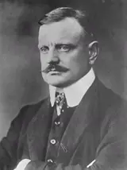

Symphony No. 2, Op. 43
44 min
Recording
- Complete: I. Allegretto · II. Tempo andante, ma rubato · III. Vivacissimo · IV. Finale: Allegro moderatoLondon Symphony Orchestra; Pierre Monteux, conductor · 18–20 June 1958, Kingsway Hall, London43:57
Pierre Monteux conducts the London Symphony Orchestra in the complete Symphony No. 2 in D major, Op. 43. A figure of three rising notes in the strings becomes the finale’s main D major theme, and a long crescendo leads from the scherzo into the finale without a break.
Listening notes · joins
- Opening three-note figure, strings
The strings begin with three rising notes in D major. Woodwinds and horns follow in short phrases separated by rests. The three-note figure returns in the finale.
- Rapallo sketches, February 1901
In February 1901 Sibelius was in Rapallo, Italy, sketching a theme for the slow movement. On the back of the sheet he wrote a scene for Don Juan, in which a guest entered his castle and stayed silent. When the guest started to sing, Don Juan recognised Death.
- Letter from Axel Carpelan, 1900
In 1900 Axel Carpelan, the baron who gave Finlandia its name, wrote to Sibelius that “it is high time for you to travel”. Italy, he added, taught “cantabile, balance and harmony”. Carpelan had no money himself, so he found a patron to pay for the trip.
- Wasenius’s recollection of the first sketches
The publisher Karl Fredrik Wasenius recalled Sibelius staring at a little piece by a seven-year-old girl, then starting to improvise: “Now I’ve got the thing that I’ve been waiting for weeks! Now it came!” Wasenius said these were motifs for the first movement of this symphony.
- Form of the first movement
Scholars have found it hard to identify a clear second subject in this movement. It opens with a series of aphoristic fragments, and their connections become clear only gradually. Veijo Murtomäki described the unity as “something discovered by Sibelius during the process of composition”.
- Recapitulation, first movement
In the recapitulation the opening dance and the longer woodwind theme return together. Sibelius sets them against each other in counterpoint, with one phrase moving while the other plays a sustained line across it.
- Reception in Finland, 1902
Finland was then subject to the tsar’s russification programme. After the première in March 1902 the public heard the heroic first and last movements as exactly what it needed, and the symphony was quickly taken up as an emblem of national liberation. Sibelius denied any such programme.
- Second movement opening, D minor
The slow movement opens in D minor. Cellos and double basses play a long pizzicato line before the bassoons enter with the theme.
- Monteux and Brahms, Vienna
As a young man in Vienna with the Geloso Quartet, Monteux took part in a private performance of a Brahms quartet with the composer listening. Brahms told the players: “It takes the French to play my music properly. The Germans all play it much too heavily.”
- Return of the bassoon theme
The bassoon theme returns, fiercer, as the anxiety grows. Sibelius printed no programme, but his sketches name Don Juan and Death, and the music can be heard as an argument between them, with Don Juan’s desperate pleas and Death’s inevitable answers.
- Second theme, divided strings
After the brass climax and a pause, divided strings play a long, quiet melody, the movement’s second theme, in F♯ major. Sibelius headed its early sketch “Christus”. The theme is interrupted several times later in the movement.
- Monteux and the London Symphony Orchestra
Pierre Monteux, born in Paris on 4 April 1875, began working with the London Symphony Orchestra in 1957. In 1961 the self-governing orchestra invited him to become its principal conductor. He was then in his eighties, and the orchestra offered him a 25-year contract with an option for renewal.
- Robert Kajanus on the Andante, 1902
In 1902 the conductor Robert Kajanus heard in the Andante “the most crushing protest against all the injustice” that threatens to take the light from the sun. Sibelius’s own sketches refer to Don Juan and Death.
- Premières, Helsinki 1902 and Stockholm 1903
Sibelius conducted the première in Helsinki on 8 March 1902. He revised the symphony afterwards, and his brother-in-law Armas Järnefelt conducted the new version in Stockholm on 10 November 1903.
- First performance, 8 March 1902
Oscar Merikanto reported that the first performance, on 8 March 1902, “exceeded even the highest expectations”. Its success consolidated Sibelius’s fame as a national hero.
- Scherzo, string figures and flute
In the scherzo the strings play rapid repeated figures. Slower phrases in the wind sound above them, and the flute’s line moves at a much slower pace than the string figures below.
- Robert Kajanus on the scherzo, 1902
In 1902 the conductor Robert Kajanus described the scherzo as frenetic preparation, writing that “Everyone piles his straw on the haystack” and that every second “seems to last an hour”. For him the oboe trio in G♭ major showed “what is at stake”.
- Trio in G♭ major, oboe
The trio slows the dance and moves to G♭ major. An oboe repeats the same note nine times over clarinets and horns before its melody opens out.
- Repeat of the scherzo
The scherzo returns with changes. Sibelius alters the slower phrases that guide the fast string writing and adds a new rising figure for the horns.
- Return of the trio
In 1902 the repeat of the scherzo would have been expected to end the movement. Here the oboe trio returns after it, and this return leads into the bridge to the finale.
- Link from scherzo to finale
Joining two movements was an old idea; Paul Serotsky called the way Sibelius did it “utterly new”. The last bars of the scherzo grow louder and lead directly into the finale. The finale’s ground-plan follows the scherzo’s, including its surprise ending.
- Opening of the finale in D major
The scherzo’s long crescendo leads without a break into the finale. The strings play the three-note rising figure in D major, and the trumpets reply, a role the woodwinds took in the first movement.
- Finale oboe motif and Elli Järnefelt
Aino Sibelius said that the oboe motif in the finale was written in memory of her sister, Elli Järnefelt, who had taken her own life. The passage brings a sense of the sacred into the music. This recedes when the faster music resumes.
- Kingsway Hall, June 1958
Monteux and the London Symphony recorded the symphony at Kingsway Hall on 18–20 June 1958. John Culshaw produced, Kenneth Wilkinson was the balance engineer, and RCA first issued the result in October 1959 as LSC 2342.
- Christening in Ruovesi, 1899
At the christening of the painter Akseli Gallen-Kallela’s son in Ruovesi, in the summer of 1899, Sibelius improvised a theme that went into the finale of this symphony.
- Critical reception, Flodin and Thomson
In 1903 the critic Karl Flodin called the symphony “an absolute masterpiece”, pointing the way of Beethoven’s. Virgil Thomson later called it “vulgar, self-indulgent and provincial beyond any description”. It is the most played of Sibelius’s symphonies.
- Coda in D major
The rising three-note figure returns in the closing D major music. Late in the coda it is extended to a fourth note, which it has not reached earlier in the symphony. Erkki Salmenhaara identified this extension.
Joins
- Pause before the woodwind second subject
The opening dance stops for a pause. The woodwinds then play a longer phrase, the start of the second-subject group, after the strings’ short, separated answers.
- Pizzicato strings open the development
The development begins with pizzicato strings. A rocking phrase and short woodwind figures are added above them, and the string rhythm from the opening continues underneath the new phrases.
- The two themes return together
The crescendo relaxes, and the opening dance theme returns alongside the longer woodwind phrase. The two themes, each in its own rhythm, are combined in counterpoint and sound at the same time.
- From D major to plucked D minor
The first movement ends in D major. After the break, cellos and basses open the slow movement in D minor and play a long plucked line. The bassoons then join them. The movement is marked Tempo andante, ma rubato, which means a walking pace with free rubato.
- Divided strings follow the brass climax
The brass climax stops and a pause follows. Divided strings then begin the contrasting melody softly, in long phrases after the broken calls of the preceding passage. Sibelius headed his sketch for this theme “Christus”.
- Bass phrase interrupts the string melody
The long string melody of the second theme rises to its climax. A contrary phrase in the bass, a variant of the same theme, then interrupts it. The music breaks into quiet fragments for the coda, and pieces of the earlier tune return.
- Pizzicato close into the Vivacissimo
The slow movement ends on two pizzicato strokes. After the break the Vivacissimo begins, with the strings playing fast repeated figures and the woodwind playing longer phrases above them.
- Scherzo to trio: oboe on one note
The fast string figures stop. The trio moves to G♭ major, and an oboe repeats one note nine times over clarinets and horns. The melody then grows out of that repeated note.
- Horns add a rising figure
The scherzo returns with its fast string figures. Sibelius alters the slower phrases above them and adds a rising figure in the horns, played over the same string accompaniment.
- The oboe trio returns
The rapid string figures of the scherzo die away and the slow trio returns. The oboe melody comes back to the foreground. On this second appearance the trio does not give way to the scherzo. It continues into the rising bridge that leads without a break into the finale.
- Rising G♭–A♭–B♭ leads into the finale
The trio turns into a crescendo built on the rising notes G♭–A♭–B♭, which the Sibelius Society of Finland identifies as the bridge motif. The three notes follow the rising shape heard at the start of the symphony. The motif is repeated several times, which lengthens the crescendo. The finale’s main theme then enters in D major.
- Scherzo into finale without a break
The crescendo leads directly into D major. The strings play the three-note rise as a broad melody, and the trumpets reply. The finale’s Allegro moderato begins straight out of the bridge, with no silence between the movements.
- Woodwind figures around the returning tune
A long crescendo begins at the quiet passage and leads to the return of the broad string tune. Short woodwind figures enter around the melody and keep a sharper rhythm against its long phrases.